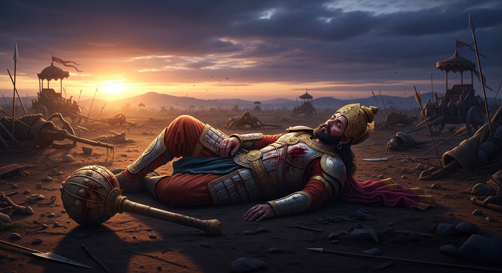
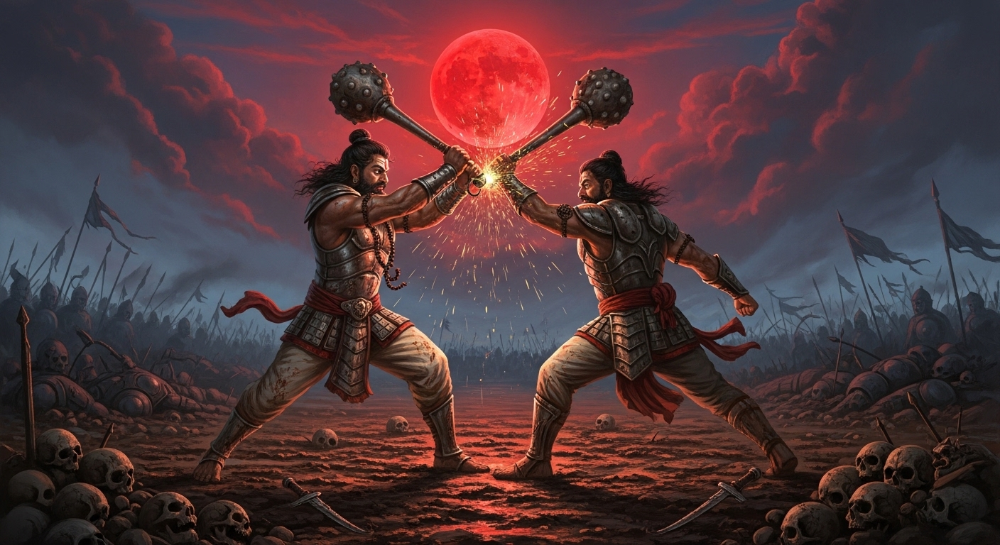

एकांकी का सारांश (Summary):
'महाभारत की एक साँझ' श्री भारतभूषण अग्रवाल द्वारा रचित एक मनोवैज्ञानिक और पौराणिक (Mythological) एकांकी
है। यह एकांकी महाभारत युद्ध के अंतिम दिन की 'संध्या (शाम)' की घटना पर आधारित है। युद्ध के अंत में जब
कौरव पक्ष का पूरी तरह विनाश हो जाता है तो दुर्योधन अपनी जान बचाने के लिए 'द्वैपायन सरोवर' (एक तालाब) में
छिप जाता है। पाण्डव उसे ढूँढ़ निकालते हैं और उसे युद्ध के लिए ललकारते हैं। एकांकी में मरणासन्न (dying)
दुर्योधन और युधिष्ठिर के बीच एक बहुत ही तीखा विचारों का टकराव (वाद-विवाद) दिखाया गया है, जहाँ दुर्योधन
अपने जीवन की सभी गलतियों को सही ठहराने की कोशिश करता है।
1. एकांकीकार का परिचय (Author Introduction)
रचनाकार: भारतभूषण अग्रवाल (Bharatbhushan Agrawal)
भारतभूषण अग्रवाल आधुनिक हिंदी साहित्य के जाने-माने कवि, कथाकार और एकांकीकार हैं। उनकी रचनाओं में पौराणिक
और ऐतिहासिक कथाओं को एक नए मनोवैज्ञानिक और आधुनिक दृष्टिकोण (Modern perspective) से देखा गया है।
'महाभारत की एक साँझ' में उन्होंने दुर्योधन के चरित्र का गहरा मनोवैज्ञानिक विश्लेषण किया है और अन्याय पर
सत्य की विजय को भिन्न रूप में प्रस्तुत किया है।
2. एकांकी के मुख्य पात्र (Main Characters)
- दुर्योधन (Duryodhan): कौरवों का सबसे बड़ा भाई। एकांकी का मुख्य पात्र। वह अत्यंत
अति-महत्त्वाकांक्षी, अहंकारी और हठी (ज़िद्दी) है। मरते समय भी उसके अहंकार में कोई कमी नहीं आती और वह
अपनी हार का दोष दूसरों (पाण्डवों) पर मढ़ता है।
- युधिष्ठिर (Yudhishthir): पाण्डवों के सबसे बड़े भाई। धर्म, शांति, और सत्य के प्रतीक।
वे युद्ध का कारण दुर्योधन की सत्ता (Power) की भूख को मानते हैं।
- भीम (Bhim): युधिष्ठिर का भाई, जिसने गदायुद्ध में दुर्योधन की जंघा (Thighs) तोड़कर
उसे परास्त किया था।
- धृतराष्ट्र (Dhritrashtra) और संजय (Sanjay): दुर्योधन के नेत्रहीन पिता धृतराष्ट्र और
उन्हें युद्ध का आँखों देखा हाल सुनाने वाले संजय। (एकांकी की शुरुआत इन्हीं के संवाद से होती है)।
3. एकांकी की प्रमुख घटनाएँ (Key Events)
- द्वैपायन सरोवर में छिपना: महाभारत का युद्ध अठारह दिन चला। कौरवों की पूरी सेना, भीष्म,
द्रोण, कर्ण और दुर्योधन के निन्यानबे (99) भाई मारे गए। अकेला दुर्योधन जान बचाकर 'द्वैपायन सरोवर' के पानी
में जाकर छिप गया।
- पाण्डवों की ललकार और गदायुद्ध: जब पाण्डवों (युधिष्ठिर और भीम) को पता चला, तो वे सरोवर
के पास पहुँचे और युद्ध के लिए कायर दुर्योधन को ललकारा। दुर्योधन बाहर आता है और भीम से उसका भयंकर
'गदायुद्ध' होता है। इस युद्ध में भीम (कृष्ण के इशारे पर) युद्ध के नियमों को तोड़कर दुर्योधन की जाँघों
(जंघा) पर गदा से प्रहार करता है, जिससे दुर्योधन बुरी तरह घायल होकर गिर पड़ता है।
- दुर्योधन का आत्म-तर्क (Self-justification): मरणासन्न दुर्योधन (जब वह ज़मीन पर पड़ा है)
अपनी हर ग़लती को जायज़ (Justify) ठहराने की कोशिश करता है। युधिष्ठिर कहते हैं कि "यह महाविनाश तुम्हारे
अहंकार और सत्ता की लालसा का नतीजा है।" लेकिन दुर्योधन युधिष्ठिर पर पलटवार करता है और कहता है कि "युद्ध
मेरी वजह से नहीं, बल्कि तुम्हारी महत्त्वाकांक्षाओं, द्रोपदी के अपमानजनक शब्दों ('अंधे का बेटा अंधा') और
तुम्हारी ईर्ष्या के कारण हुआ।"
- दुर्योधन का प्रायश्चित (Realization at Death): दुर्योधन अंत तक खुद को निर्दोष बताता है,
लेकिन मरते-मरते उसे महसूस होता है कि उसने अपने स्वार्थ के लिए अपने गुरुओं, भाइयों और पितामह भीष्म को मौत
के घाट उतार दिया। वह समझ जाता है कि 'रक्त से सना हुआ राजमुकुट' किसी काम का नहीं है। पश्चाताप और शारीरिक
पीड़ा के साथ एकांकी का दर्दनाक अंत होता है।
4. महत्वपूर्ण कथन (Important Quotes)
"मैंने युद्ध नहीं किया, मैंने तो केवल अपने उस सत्य की रक्षा की है जो तुम लोगों के अहंकार के कारण कुचला जा
रहा था... लेकिन मुझे क्या मिला? केवल मेरी महत्त्वाकांक्षा ने यह महाविनाश रचा?"
= दुर्योधन का यह कथन उसके अहंकार और आत्म-तर्क (Self-justification) को दर्शाता है। वह अपनी ग़लती मानने को
तैयार नहीं है। (यह कथन महत्वपूर्ण है)।
"तुमने सत्य के लिए नहीं, अपनी अंधी 'महत्त्वाकांक्षा' और 'कपट' के लिए युद्ध किया।"
= युधिष्ठिर का यह कथन दुर्योधन को दर्पण (सच्चाई) दिखाता है।
5. एकांकी का उद्देश्य (Theme)
- अहंकार और महत्त्वाकांक्षा का विनाश: एकांकी का मुख्य उद्देश्य यह दिखाना है कि
अत्यधिक सत्ता का लालच और अहंकार मनुष्य को, उसके परिवार को और पूरे समाज को सर्वनाश की ओर ले जाता है
(जैसे कौरवों का हुआ)।
- सत्य और असत्य का द्वंद्व: दुर्योधन अपनी हार के बाद भी झूठ को सच बनाने की कोशिश करता
है, परंतु असत्य अंततः हारता ही है।
- युद्ध की भयावहता (Horrors of War): एकांकी यह स्पष्ट करती है कि युद्ध किसी भी समस्या
का समाधान नहीं है। युद्ध में भले ही पाण्डवों की जीत हुई, लेकिन वे भी अपने परिजनों को खोकर मानसिक रूप
से टूट गए थे।

6. परीक्षा उपयोगी प्रश्न-उत्तर (Practice Zone)
प्रश्न 1: महाभारत का युद्ध कहाँ और कितने दिनों तक चला? दुर्योधन अपने प्राण बचाने के लिए
कहाँ छिपा था?
उत्तर: महाभारत का भयंकर युद्ध कुरुक्षेत्र के मैदान में अठारह (18) दिनों
तक चला था जिसमें कौरवों की विशाल सेना मारी गई थी। जब युद्ध के अंत में अकेला दुर्योधन बचा तो वह अपनी जान
बचाने के लिए 'द्वैपायन सरोवर' (एक जलाशय/तालाब) के जल के अंदर जाकर छिप गया था।
प्रश्न 2: दुर्योधन के अनुसार महाभारत युद्ध का असली कारण क्या था?
उत्तर: मरणासन्न दुर्योधन (जब वह घायल पड़ा था) ने युधिष्ठिर पर आरोप
लगाते हुए महाभारत युद्ध के तीन मुख्य कारण बताए: (1) उसका मानना था कि पाण्डवों के पास अपनी कोई ज़मीन नहीं
थी और वे 'महत्त्वाकांक्षा' के कारण इन्द्रप्रस्थ के बाद हस्तिनापुर हड़पना चाहते थे। (2) द्रोपदी द्वारा
राजसूय यज्ञ में दुर्योधन को यह कहना कि 'अंधे का बेटा अंधा', जिससे दुर्योधन का भारी अपमान हुआ और उसके
अंदर प्रतिशोध (Revenge) की ज्वाला भड़क उठी। (3) पाण्डवों द्वारा राज्य की सत्ता को बाँटने की ज़िद।
दुर्योधन अपनी किसी भी गलती (जैसे लाक्षागृह षड्यंत्र, द्रोपदी चीरहरण या सत्ता का अहंकार) को युद्ध का कारण
मानने से साफ़ इंकार करता है।
प्रश्न 3: एकांकी के शीर्षक 'महाभारत की एक साँझ' की सार्थकता स्पष्ट कीजिए।
उत्तर: एकांकी का शीर्षक पूर्णतः उपयुक्त और सार्थक है। 'महाभारत की एक
साँझ' का अर्थ है - महाभारत युद्ध के अठारहवें (अंतिम) दिन की वह 'शाम (संध्या)', जब पूरे कौरव वंश का विनाश
हो चुका था और घायल दुर्योधन द्वैपायन सरोवर के पास पड़ा था। यह साँझ केवल उस दिन की साँझ नहीं थी, बल्कि
दुर्योधन के 'जीवन' की साँझ, कौरव 'साम्राज्य' के पतन की साँझ और 'अहंकार' के अंत की साँझ थी। इसी संध्या
में पूरे महाभारत के युद्ध के कारणों और परिणामों पर दुर्योधन और युधिष्ठिर के बीच एक अंतिम और बहुत मार्मिक
बहस होती है। अतः शीर्षक बिल्कुल सटीक है।